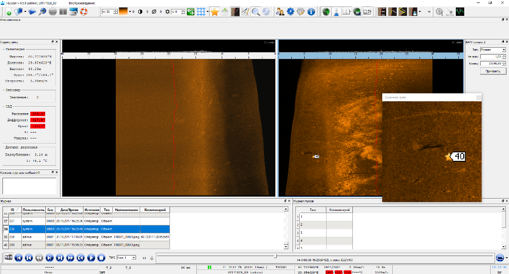
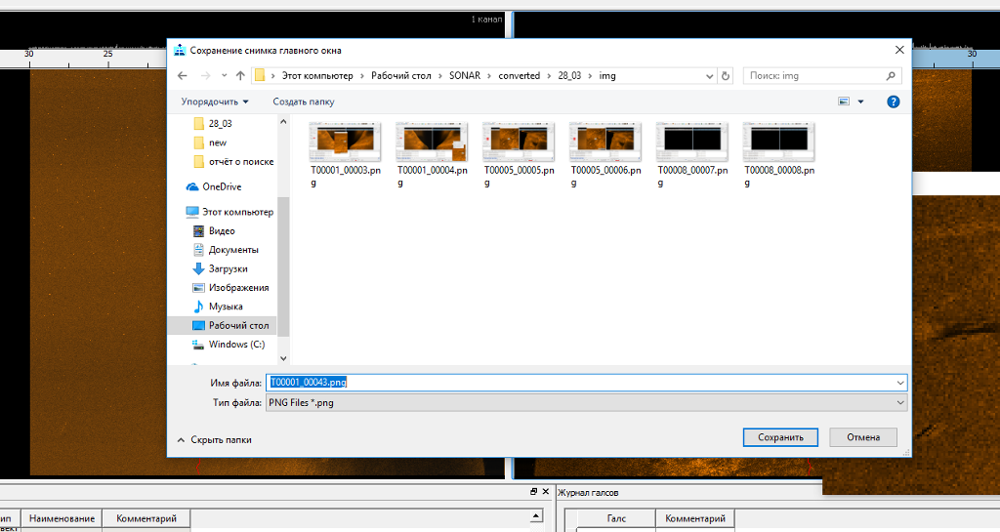
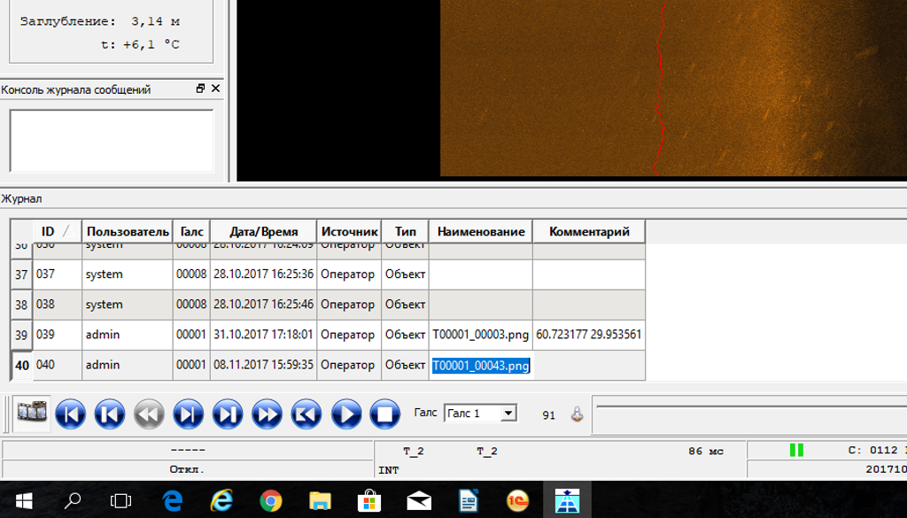
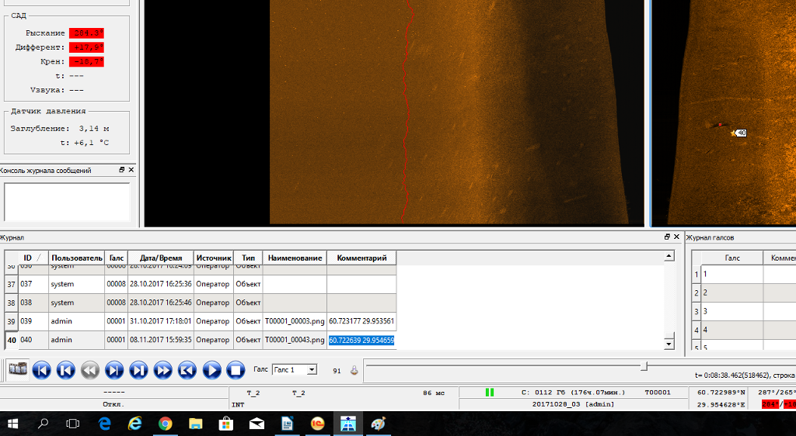
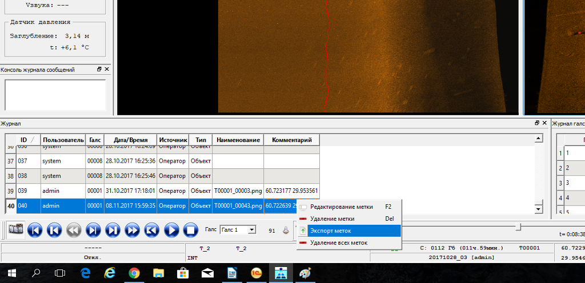
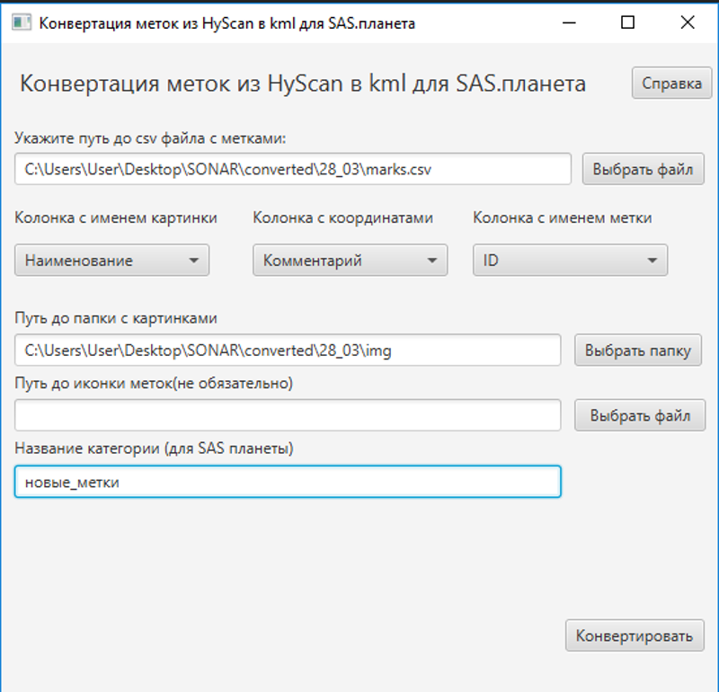
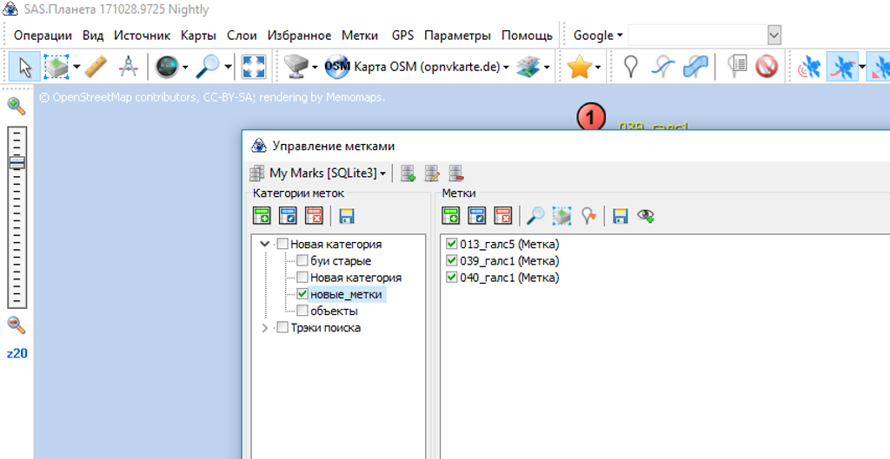
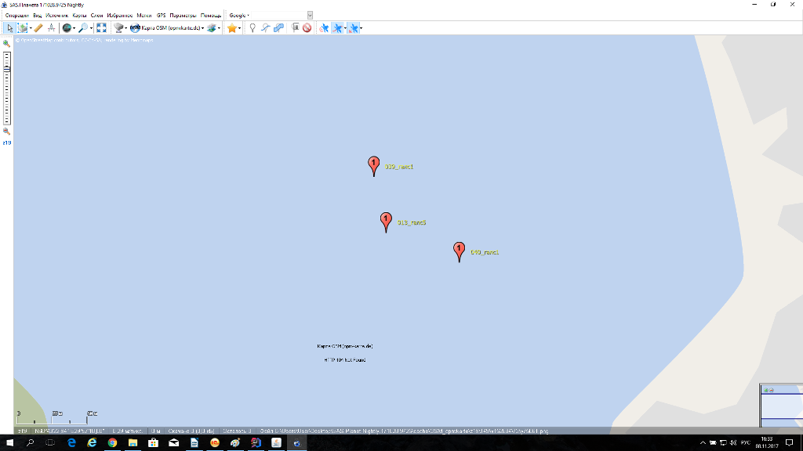
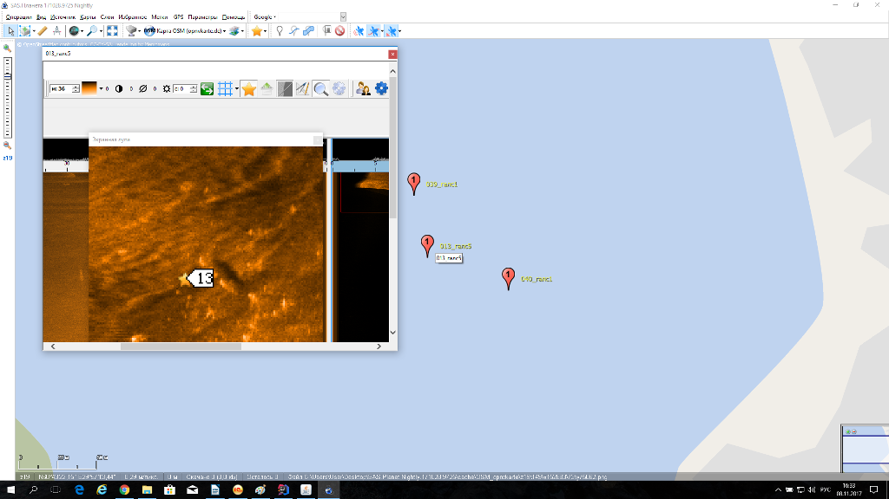

Справка по программе для конвертации меток из программы HyScan в kml файл для SAS.планета
Мы столкнулись с неудобством добавления большого количества точек из HyScan в SAS.планета вместе с изображениями. Чтобы не добавлять вручную каждую точку можно сконвертировать метки из HyScan в формате CSV. Но так как ставить метку желательно рядом с объектом то координаты меток не соответствуют координатам объектов. Удобно было бы ковертировать данные о метках со скриншотами в формат, удобный для SAS. Для этого мы написали небольшую программу. Порядок действий описан далее.
1.Выбираем кадр, ставим метку.

2. Делаем скриншот и сохраняем изображение в нужную папку. Из этой папки SAS будет брать изображения для меток. SAS использует абсолютные пути. При сохранении копируем имя картинки с расширением.

3. И вставляем имя картинки в свободную ячейку описания метки. Например, в «Наименование».

4. Получаем координаты объекта и вставляем в другую свободную ячейку, например в «Комментарий»

5.Экспортируем метки

6. В программе конвертации выбираем csv файл меток
7. Далее в выпадающем меню «Колонка с именем картинки» выбираем ячейку с сохранённым именем картинки, у нас это «Наименование». Если картинок нет можно выбрать «Нет».
8. В выпадающем меню «Колонка с координатами» выбираем ячейку с сохранёнными координатами, у нас это «Комментарий». Если выбрать колонку «Координаты», то будут использованы координаты самой метки.
9. В выпадающем меню «Колонка с именем метки» выбираем ячейку для именования метки на карте, например, “ID”.
10. В поле «Путь до папки с картинками» указываем папку, куда сохраняли картинки.
11. В поле путь до иконки можно ничего не указывать. SAS при добавлении точек предложит назначить иконку.
12. В поле «Название категории» можно указать категорию для меток для SAS.

13. Нажать «Конвертировать» и сохранить готовый файл.
14. В программе SAS.планета открыть «Управление метками» и импортировать готовый kml файл. Метки появятся в категории Новая категория\новые_метки. К имени метки добавиться имя галса.


При нажатии на метку откроется скриншот.
